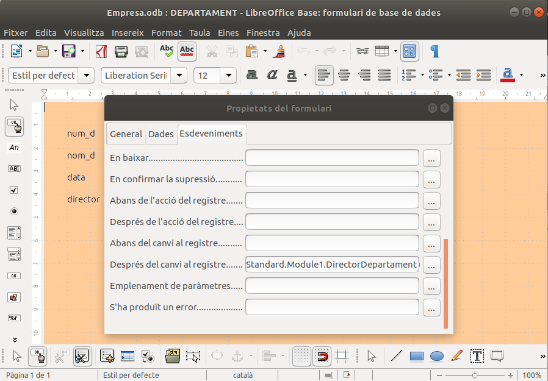
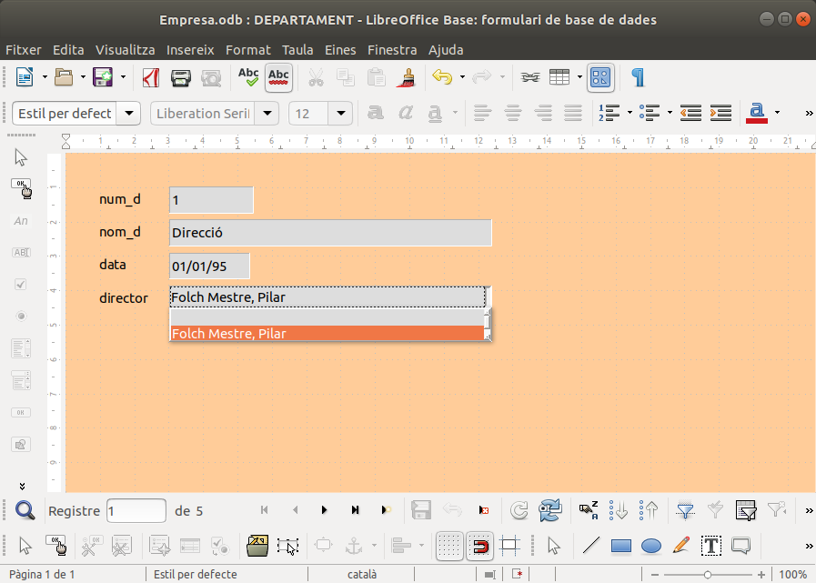

2.4 Exemple avançat: compliment de restriccions externes
Podem utilitzar les macros per a aconseguir alguna de les restriccions externes del Model Relacional, ja que per mig del codi podem aconseguir coses molt potents.
Per exemple, en l'esquema del Model Relacional havíem apuntat aquesta restricció externa:
Rex1: El cap d'un departament ha de ser membre d'aquest
Com podríem aconseguir açò? Doncs si en el formulari Departament en el quadre de llista que havíem fet per a triar el director, només mostrem els membres del Departament que s'està visualitzant, ho tindríem prou bé per a acomplir la restricció. Està clar que no ho aconseguirem sempre, ja que si anem a editar les dades en la taula directament, ens ho saltarem. Però és una primera manera d'aconseguir-ho. En el Tema 7, ho podrem fer de manera més seriosa.
Copieu el següent codi al costat de les altres macros que havíem fet. Evidentment, aquesta macro ja és molt avançada, molt més dels objectius introductoris d'aquest annex. Per tant, agafeu-la únicament com un exemple.
Sub DirectorDepartament
form_container = ThisDatabaseDocument.FormDocuments.getByName("DEPARTAMENT")
form_container.open
formDepartament = form_container.Component.getDrawPage().getForms().getByIndex(0)
campDepartament = formDepartament.getByName("fmtnum_d")
departament = campDepartament.getCurrentValue
sSql = "SELECT ""nom"" , ""dni"" FROM ""EMPLEAT""" &_
" WHERE ""departament"" = '" & departament & "' ORDER BY ""nom"" ASC"
director = formDepartament.getByName("txtdirector")
director.listsource = array(sSql)
director.refresh()
End SubEn definitiva el que fem és agafar el valor que té el camp num_d del formulari Departament, i fer una sentència SQL seleccionant els empleats d'aquest departament. Això li ho assignem al camp director, i el refresquem per a que ens ho mostre en aquest mateix moment.
Falta saber el moment en què hem d'executar aquesta macro. Haurà de ser cada vegada que ens situem en un nou registre de la taula Departament. Aquest esdeveniment s'anomena Després del canvi de registre, i és un esdeveniment del mateix formulari, no de cap control. En ell triarem la macro que acabem de copiar, que es diu DirectorDepartament

Quan executem el formulari, podem observar que en el quadre de llista només estan els empleats del present departament

Llicenciat sota la Llicència Creative Commons Reconeixement NoComercial SenseObraDerivada 2.5